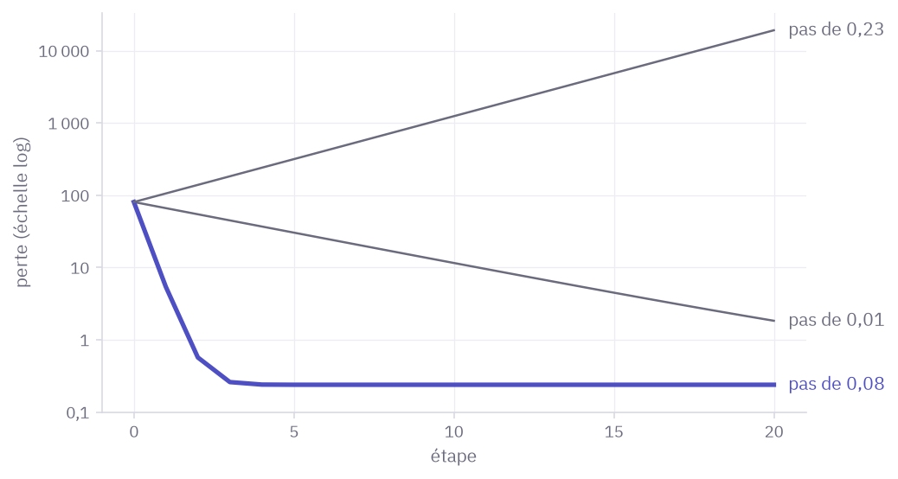

Jour 1 sur 140 · Phase 1 : Apprendre à partir de données
La perte et la descente de gradient
Un modèle a des paramètres ; la perte chiffre son erreur ; la descente de gradient déplace chaque paramètre à contre-pente, d'un pas proportionnel à la pente.
1Notions
Le cas : trois trajets BIXI et un modèle d'une seule ligne, durée = w × distance. Le paramètre w se lit en minutes par kilomètre. Apprendre, c'est trouver le w qui se trompe le moins sur les trois trajets.
La perte
On chiffre l'erreur par l'erreur quadratique moyenne : la moyenne des carrés des écarts entre la durée prédite et la durée réelle. Le carré rend tout écart positif et punit plus fort les grosses erreurs. Chaque valeur de w donne une perte : la courbe ci-dessous a la forme d'un creux, et le meilleur w est au fond.
Un pas, à la main
On part de w = 0, avec un pas (taux d'apprentissage) de 0,05.
| Trajet | Distance (km) | Durée (min) | Prédiction | Erreur | Erreur × distance |
|---|---|---|---|---|---|
| A | 1 | 4 | 0 | −4 | −4 |
| B | 2 | 9 | 0 | −9 | −18 |
| C | 3 | 12 | 0 | −12 | −36 |
| Moyenne | −19,33 |
La pente de la perte vaut 2 × (−19,33) = −38,67. Le nouveau w vaut 0 − 0,05 × (−38,67) = 1,93 min/km, et la perte passe de 80,3 à 23,0. Au fond du creux, w = 58 ÷ 14 ≈ 4,14 min/km, soit environ 14,5 km/h.
La recette
w ← 0
répéter N fois :
erreurs ← w × distances − durées
pente ← 2 × moyenne(erreurs × distances)
w ← w − pas × pente
Le pas décide de tout
Trop petit, il faut des dizaines de pas. Trop grand, chaque pas saute par-dessus le creux et la perte remonte. Ici, la courbure de la perte vaut 28 ÷ 3 ≈ 9,33 : tout pas plus grand que 2 ÷ 9,33 ≈ 0,21 fait diverger la descente.
À regarder
StatQuest, Gradient Descent, Step-by-Step, de 2:00 à 14:35 : un seul paramètre, la pente de la perte, la taille du pas et l'arrêt. À chercher : pourquoi les pas raccourcissent près du fond.
2Démo
La perte selon w
Les trois trajets et la droite du modèle
| Étape | w (min/km) | Perte |
|---|
Trois trajets fictifs, choisis pour se calculer à la main : A (1 km, 4 min), B (2 km, 9 min), C (3 km, 12 min). En gris, la droite du meilleur w.
3Ce que j'ai fait, en mes mots
J'ai codé la mise en situation simplement.

J'ai compris le processus général de la descente de gradient, plus particulièrement la mécanique du gradient de la perte, et comment, plutôt que d'y aller valeur par valeur (la méthode initiale de la vidéo), on utilise la dérivée de la perte par rapport à la pente et à l'ordonnée à l'origine. On peut ainsi tendre vers le minimum (global ou local, à voir plus tard). Il y a évidemment un enjeu au niveau du pas, et parfois aussi du nombre d'itérations, qui servent de critères d'arrêt. Mais globalement, la notion de fonction de perte reprend l'idée que la perte est un choix, et que le modèle va exploiter les failles s'il y en a.
Mon carnet : jour-001.ipynb.
Sources
- StatQuest (Josh Starmer), Gradient Descent, Step-by-Step, de 2:00 à 14:35.
- 3Blue1Brown, Gradient descent, how neural networks learn, chapitre 2 de la série Deep Learning.
Notions et démo : l'assistant IA. Carnet, figure et mots : Akram, code écrit pas à pas avec l'assistant IA.